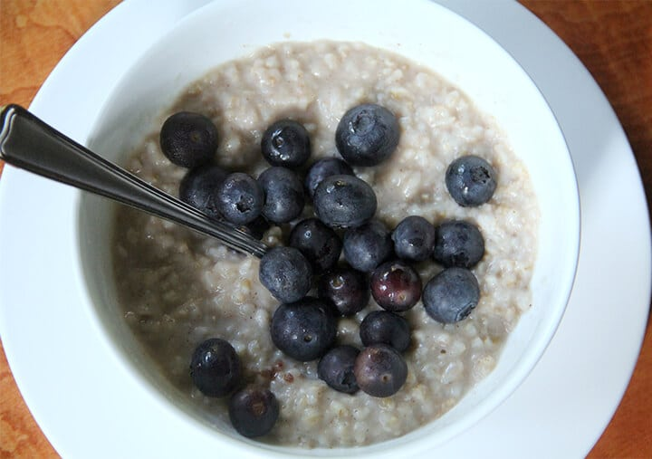

Rice Cooker Oats

It's done in a rice cooker rather than the stove.
A creamy comfort food treat in the morning, Easy Rice Cooker Oatmeal.
A breakfast that has become a daily habit in our house this winter.
Ingredients
- 1 cup quick-cooking oats
- 1 cup water
- 1 cup milk
- 2 tablespoons honey
- 1 tablespoon white sugar
- 1 teaspoon vanilla extract
- 1 pinch salt
Directions
- Stir together oats, almond milk, and Greek yogurt in a bowl. Mix in strawberries, honey, and chia seeds until
well combined. Spoon mixture into 3 glass jars with lids.
- Refrigerate the jars overnight to allow the oats to soften. Serve cold in the morning.